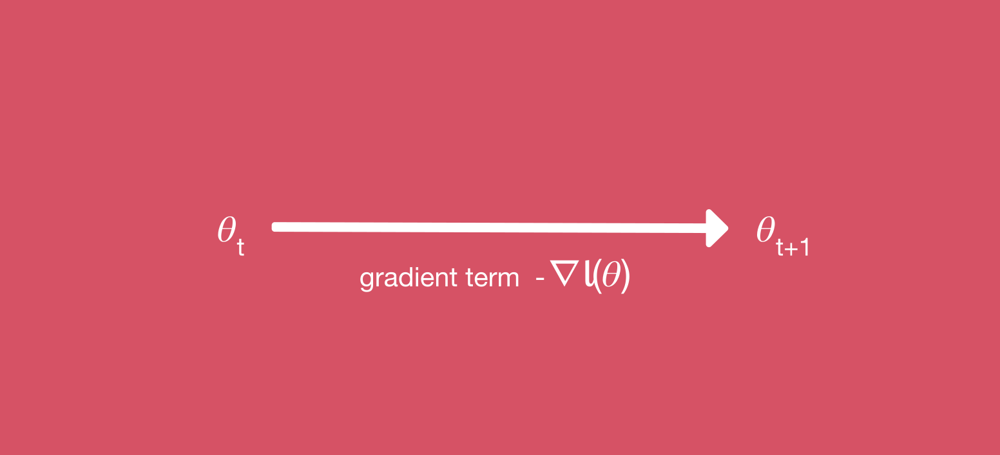
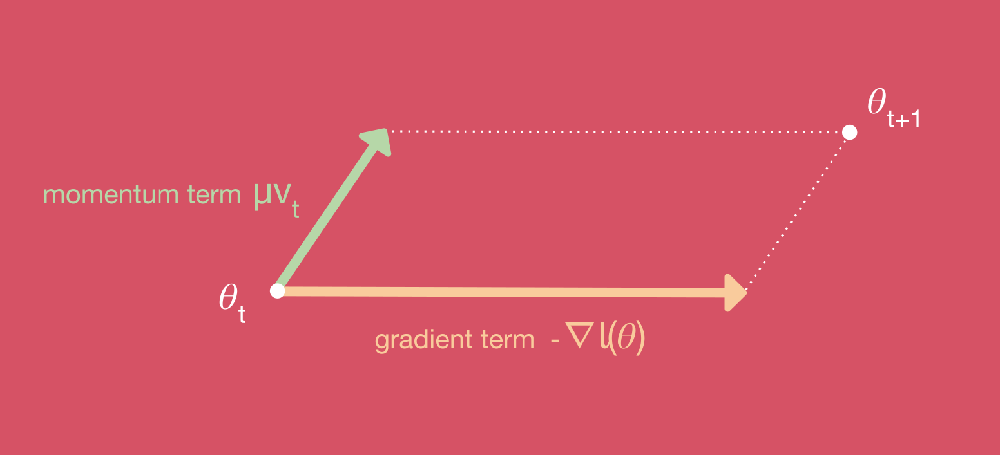
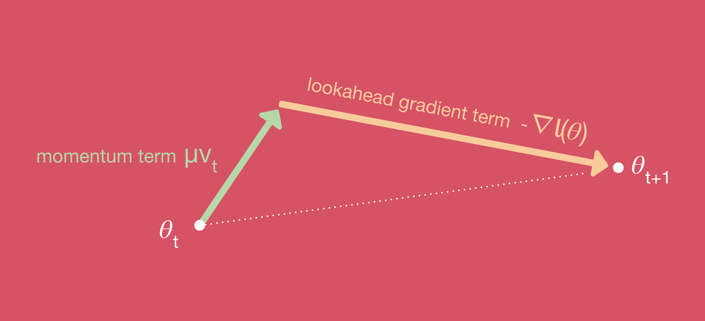

Understanding Nesterov Momentum (NAG)
→ First: Gradient Descent
→ Second: Gradient Descent with Momentum
→ Third: Gradient Descent with Nesterov Momentum
→ Second: Gradient Descent with Momentum
→ Third: Gradient Descent with Nesterov Momentum
Momentum and Nesterov Momentum (also called Nesterov Accelerated Gradient/NAG) are slight variations of normal gradient descent that can speed up training and improve convergence significantly.
First: Gradient Descent
The most common method to train a neural network is by using gradient descent (SGDstochastic gradient descent
). The way this works is you define a loss functionsometimes called cost or error function or optimization objective
\(l(\theta)\) that expresses how well your weights & biases \(\theta\) allow the network to fit your training data. A higher loss means that the network is bad and makes a lot of errors while a low loss generally means that the network performs well. You can then train your network by adjusting the network parameters in a way that reduces the loss.
Formally the update rule in SGD is defined like this: $$\theta_{t+1} = \theta_t − \eta\nabla l(\theta)$$ Here you take the gradientderivative into all dimensions of the function
\(\nabla\) of the loss function \(l\) which tells you in which direction you have to move through parameter space to increase the loss. Then you go in the opposite direction \(-\nabla l\) (in which the loss decreases) and move by a distance dependent on the learning rate \(\eta\).This works very well in most cases and is the foundation of much of modern deep learning.
Second: Gradient Descent with Momentum
Momentum is essentially a small change to the SGD parameter update so that movement through the parameter space is averaged over multiple time steps. This is done by introducing a velocity component \(v\). Momentum speeds up movement along directions of strong improvement (loss decrease) and also helps the network avoid local minima. It is intuitively related to the concept of momentum in physics.
With momentum, the SGD update rule is changed to: $$v_{t+1} = \mu v_t-\eta\nabla l(\theta)\\\theta_{t+1} = \theta_t + v_{t+1}$$ Here \(v\) is the velocity and \(\mu\) is the momentum parameter which controls how fast the velocity can change and how much the local gradient influences long term movement. At every time step the velocity is updated according to the local gradient and is then applied to the parameters.
Third: Gradient Descent with Nesterov Momentum
Nesterov momentum is a simple change to normal momentum. Here the gradient term is not computed from the current position \(\theta_t\) in parameter space but instead from a position \(\theta_{intermediate}=\theta_t+ \mu v_t\). This helps because while the gradient term always points inthe right directionthe direction where the loss is minimized
, the momentum term may not. If the momentum term points in the wrong direction or overshoots, the gradient can still "go back" and correct it in the same update step. 
The revised parameter update rule is: $$v_{t+1} = \mu v_t-\eta\nabla l(\theta+ \mu v_t)\\\theta_{t+1} = \theta_t + v_{t+1}$$
Any questions? Suggestions? Clarification needed?
Telegram: @schmidtdominik
Email: schmidtdominik30 [at] gmail. [dot] com
Reddit: u/dominik_schmidt
I usually reply the same or next day.
Telegram: @schmidtdominik
Email: schmidtdominik30 [at] gmail. [dot] com
Reddit: u/dominik_schmidt
I usually reply the same or next day.